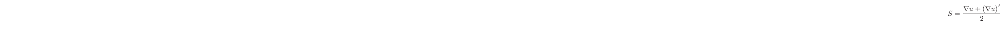
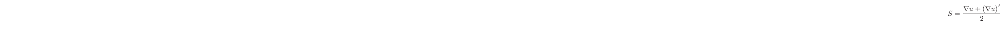
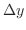
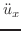
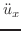

When an object vibrates, waves propagate through it. The term wave is used to describe the transfer of energy without the global translation of matter. To begin to talk about vibrations in finite substrates such as objects, we must first consider the case of a material without boundaries. The behaviors of finite objects will then precipitate from this more abstract case.
In fluids of sufficiently low viscosity, stress is the force normal to the surface per unit area:
Stress on the object results in strain, a dimensionless proportion of
displacements given by the ratio of the length of a stressed particle to an unstressed one Consider a lattice of particles with springs connecting them. Strain represents how much each spring has been deformed from its equilibrium point.
The displacement,  , is a vector that represents the particle's position along
the
, is a vector that represents the particle's position along
the  ,
,  , and
, and  axes. Changes in these displacements will propagate throughout the object, from particle to particle. [3,18]
axes. Changes in these displacements will propagate throughout the object, from particle to particle. [3,18]
Of particular interest are the local deformations of the object, rather than the
overall translation of the object in space. These local deformations are given by the displacement gradient, , another 2nd-rank tensor[3, p. 12]:

This tensor describes local translations and rotations between neighboring
particles. It was produced by taking the partial derivative of each component in vector  with respect to each spatial dimension.
with respect to each spatial dimension.
The strain tensor  eliminates the contributions given by rotations, allowing us to describe only local rarefactions, compressions, or shear movements. The formula for is:
where  denotes the matrix transpose of
eliminates the contributions given by rotations, allowing us to describe only local rarefactions, compressions, or shear movements. The formula for is:
where  denotes the matrix transpose of  , wherein the column and row indeces are exchanged, i.e.,
. 1.1Alternatively, in terms of the components of , we can write[3, p. 13]:
, wherein the column and row indeces are exchanged, i.e.,
. 1.1Alternatively, in terms of the components of , we can write[3, p. 13]:
In equation (1.1.1), each element of the strain matrix describes changes in displacement for combinations of two directions, which could be identical. The diagonal elements in strain matrix , with , relate to rarefactions and compressions, where the two directions of changing displacement are the same (e.g. longitudinal waves). The off-diagonal components (with ) relate to shear motions, where the two directions of changing displacement are different (e.g. transverse waves). [3, 14]
We are now equipped to derive the equation of motion within an elastic solid. It is useful and common to assume the change in stress acts on a particle along the basis lengths , , and  uniformly. This approximation is valid only because we will take the particle's volume to the infinitesimal limit later in the derivation. It is similar in spirit to the ``Lumped Element Model'' of Maxwell's Equations in electronics.
To find a force acting in the  direction, for example, we multiply the appropriate stress component of tensor by the areas of each of the faces on the particle, i.e.[3, p. 15]:
direction, for example, we multiply the appropriate stress component of tensor by the areas of each of the faces on the particle, i.e.[3, p. 15]:
Newton's 2nd Law of Motion states that the force an object experiences equals its
mass times its acceleration, or
, where
. The mass of the particle is its density
times its volume, or
.
Using equation (1.1.2), we can now find an equation that relates an
acceleration in the  direction, , to the
resulting effect on the stress tensor, [3, p. 16]:
direction, , to the
resulting effect on the stress tensor, [3, p. 16]:
Now we can simplify equation (1.1.3) and take the limit as the
particle volume approaches zero to derive the Equations of Motion for a
solid:
Hooke's Law describes the behavior of an elastic material by relating the strain
to the stress with a coefficient,  . It is a first-order approximation, which implies a linear relationship between these terms. The benefits of this approximation will be made clear when we discuss the superposition principle in section 1.2. In one dimension, Hooke's Law is . In the general case we are deriving, recall that stress, , is a 2nd-rank tensor, and so is strain, . To allow the coefficient to map between these two 2nd-rank tensors, it is necessary to invoke it as a 4th-rank tensor
. It is a first-order approximation, which implies a linear relationship between these terms. The benefits of this approximation will be made clear when we discuss the superposition principle in section 1.2. In one dimension, Hooke's Law is . In the general case we are deriving, recall that stress, , is a 2nd-rank tensor, and so is strain, . To allow the coefficient to map between these two 2nd-rank tensors, it is necessary to invoke it as a 4th-rank tensor  . Stating Hooke's Law in 3 dimensions this way, and generalizing it for any stress vector, on each surface of the particle, , produces the Elastic Constitutive Relation[18, p. 542]:
. Stating Hooke's Law in 3 dimensions this way, and generalizing it for any stress vector, on each surface of the particle, , produces the Elastic Constitutive Relation[18, p. 542]:
It is desirable to reduce the number of unique components in equation
(1.1.5). Recall that  is a 4th-rank
tensor--effectively a 4-dimensional matrix with 3 components in each dimension--with components total. Fortunately, not all of these components are unique. Exploiting the redundancies endemic to the stress and strain tensors, it is
possible to rewrite equation (1.1.5), with and stated in terms
of a single index
is a 4th-rank
tensor--effectively a 4-dimensional matrix with 3 components in each dimension--with components total. Fortunately, not all of these components are unique. Exploiting the redundancies endemic to the stress and strain tensors, it is
possible to rewrite equation (1.1.5), with and stated in terms
of a single index  , and , respectively. These new indeces will be denoted as a capitol letter. This is because
, as shown in equation (1.1.1). Reduced index
, and , respectively. These new indeces will be denoted as a capitol letter. This is because
, as shown in equation (1.1.1). Reduced index  maps to standard tensor indeces
maps to standard tensor indeces  , and , analogously, to .
Using this simplification, known as reduced notation, and can refer
to any of the 6 unique components in or , by defining
. The reduced notation form of is shown below, expanded into matrix form[18, p. 542]:
, and , analogously, to .
Using this simplification, known as reduced notation, and can refer
to any of the 6 unique components in or , by defining
. The reduced notation form of is shown below, expanded into matrix form[18, p. 542]:

The reduced notation subscripts, used above, map to the standard tensor notation, developed in equation (1.1.5), as follows[3, p. 17] [18, p. 543]:
Similarly, the components in are reduced to  , where capitol indeces
are an analogous reduction of the four indeces to 36 unique components. This follows from the reduction to indeces
, where capitol indeces
are an analogous reduction of the four indeces to 36 unique components. This follows from the reduction to indeces  and above. This 6 x 6 matrix can be further reduced, since
. Most solids can be described with a stiffness matrix consisting of only 21 components. Of these, 6 are diagonal--meaning they describe collinear relationships--and 15 are triangular--meaning they describe transverse relationships. The term isotropic denotes that the inter-particulate lattice behaves symmetrically in all directions. Isotropic crystals, for example, provide a helpful case to consider, as they require only 2 terms to describe fully. Combinations of these two elasticity coefficients, called the Lamé constants, are sufficient for describing all Hookean vibration in the material. The degree to which we can reduce a solid's stiffness, strain, and stress matrices , , & , respectively, depends on the symmetries encoded in the material's inter-particulate
relationships. [3] To elucidate especially complex behavior, we will occasionally assume isotropy in our treatment of waves.
and above. This 6 x 6 matrix can be further reduced, since
. Most solids can be described with a stiffness matrix consisting of only 21 components. Of these, 6 are diagonal--meaning they describe collinear relationships--and 15 are triangular--meaning they describe transverse relationships. The term isotropic denotes that the inter-particulate lattice behaves symmetrically in all directions. Isotropic crystals, for example, provide a helpful case to consider, as they require only 2 terms to describe fully. Combinations of these two elasticity coefficients, called the Lamé constants, are sufficient for describing all Hookean vibration in the material. The degree to which we can reduce a solid's stiffness, strain, and stress matrices , , & , respectively, depends on the symmetries encoded in the material's inter-particulate
relationships. [3] To elucidate especially complex behavior, we will occasionally assume isotropy in our treatment of waves.
For a general, non-isotropic solid, equation (1.1.5) can then be written, somewhat more humanely, as:
| (1.1.6) |
that we are ignoring global translation and rotation of particles. Thus, all that remains is the definition of energy in this context. Energy in this system is defined in two components: kinetic and potential. The kinetic energy per unit volume is due to the particulate motion of the material, i.e.[18, p. 6],